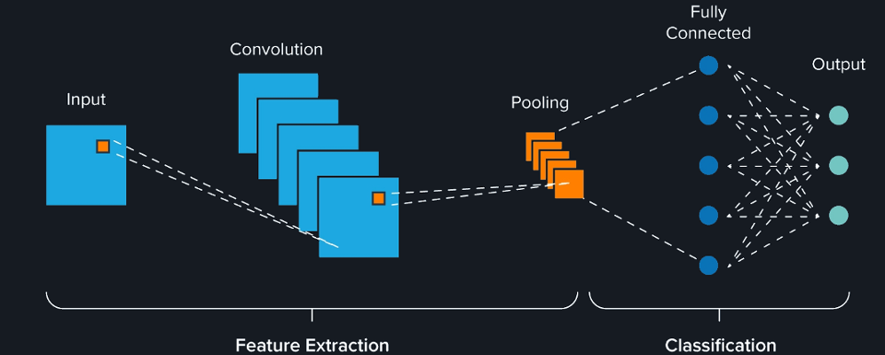

LLM: AI Text Generator powered by a Large Language Model
Developed a web app that generates text based on user input. The data was cleaned and preprocessed using Regex, NLTK, Gensim, and SpaCy. The data was then visualized to gain insights. A large language model, GPT2, was fine-tuned with a custom dataset using PyTorch. The interactive app was built using Azure Function and Static Webapps.
RNN: A Key to Unlocking Cloud Cost Analysis and Optimization using Machine Learning
Conducted an in-depth analysis of the cloud consumption patterns by building a Power BI dashboard and deployed ML model to the cloud for future billing prediction using a Recurrent Neural Network (LSTM), TensorFlow, Scikit Learn, Pandas, NumPy, Matplotlib and Seaborn. This resulted in cost savings of over $500k per year.

CNN: Accurate COVID-19 Detection using Machine Learning
Developed an application that utilizes a Convolutional Neural Network to classify X-ray images for Covid infection detection. Increased the sample size using data augmentation and achieved a 96% accuracy using MobileNet (transfer learning). The application has been deployed to the cloud, enabling efficient diagnosis of Covid infections by doctors.

ANN: Unveiling Telecommunication Hidden Insights with Machine Learning
Participated in a Power BI competition hosted by Codebasics and have built a complete end-to-end project featuring EDA, Feature Engineering, Power BI, Machine Learning Model Training, and Cloud Deployment via a CI/CD pipeline. This enables businesses to optimize their revenue streams and stay ahead of the market competition. Utilized SQL to extract data from six different related tables from sales databases using JOIN. Transformed and filtered data using aggregating and filtering functions to improve reporting process. Loaded and visualized data with Python to identify key business intelligences that can improve sales performance.

Stable Diffusion: AI-Generated Image Web Application
Conceptualized, developed, and implemented a dynamic web application dedicated to generating AI-generated images. Created an intuitive and user-friendly interface that allows users to effortlessly generate unique images through prompt inputs.

MLOps: Machine Learning for Maternal Risk
Built an Artificial Neural Network classification model to identify maternal risks, incorporating Exploratory Data Analysis (EDA), Feature Engineering, Power BI, Machine Learning (ML) and Deep Learning (DL) training. The model was deployed to the cloud via a CI/CD pipeline. This solution helped to identify and manage potential health risks during pregnancy, leading to improved outcomes for both the mother and baby.

ETL: An Analysis of Azure IaaS for Savings
Designed and developed Azure ETL data pipeline that extracts data daily from various sources, including SQL and REST API. The solution also performs data transformation using Azure Data Factory, Databricks and Data Lake. This implementation resulted in efficiency gains for valuable licensing insights and reduced manual efforts by 10 hours per week.

Power BI: Cloud Security Dashboard
Implemented a new Power BI dashboard to help identify and track cloud security vulnerabilities. The data was collected via a REST API, and the dashboard was embedded into Azure Web Apps and deployed using a GitHub Actions CI/CD pipeline. This dashboard provides a visual representation of the data, allowing the team to quickly identify areas of concern.